CNN Architecture Study: Intel Image Classification
A systematic, controlled comparison of CNN architectural patterns — batch normalization, residual connections, depthwise-separable convolutions, and a from-scratch Xception-style network — followed by transfer learning with a pretrained Xception-41 backbone, all evaluated on the same 6-class scene classification task. The goal wasn't the highest possible accuracy; it was isolating why each technique helps, or doesn't, at a dataset scale smaller than what most of these techniques were designed for.
Dataset & Methodology
Intel Image Classification — ~14,000 training images and ~3,000 test images across 6 scene categories: buildings, forest, glacier, mountain, sea, street. Images were resized to 150×150 for the from-scratch models and 299×299 for the pretrained-backbone models (matching Xception-41's native training resolution). An 80/20 train/validation split was carved out of the training set with a fixed seed, kept identical across every model for a fair comparison; the test set was held out entirely until final evaluation.
Every model trained for 15 epochs with the Adam optimizer, sparse_categorical_crossentropy loss, and a ModelCheckpoint callback that saved only the best-val-loss weights — so every reported result reflects the best point in training, not whatever the final epoch happened to look like. That mattered more than once (see Discussion).
The five from-scratch stages were built cumulatively — each one adds a single technique on top of the previous stage, so results reflect the combined effect up to that point, not each technique in isolation. Two additional models push further: a deeper, more faithful Xception-style network with dropout and data augmentation, and transfer learning with a pretrained Xception-41 backbone (first frozen, then fine-tuned).
Results
| Model | Test Accuracy | Test Loss |
|---|---|---|
| Fine-tuned Xception-41 | 91.0% | 0.367 |
| Pretrained Xception-41 (frozen backbone) | 89.2% | 0.359 |
| Xception-Lite V2 (deep + dropout + augmentation) | 87.0% | 0.388 |
| Baseline CNN | 85.6% | 0.425 |
| + Batch Normalization | 85.4% | 0.430 |
| + Depthwise-Separable Convolutions | 84.0% | 0.466 |
| Xception-Lite V1 (entry/middle/exit, no regularization) | 82.8% | 0.451 |
| + Residual Connections | 82.7% | 0.509 |
Trained model weights (.keras checkpoints) aren't in the repo — several exceed GitHub's 100MB file limit — and are hosted on the Hugging Face Hub instead. Diagrams generated via keras.utils.plot_model; curves plot per-epoch train/validation accuracy and loss from each run's history.
Discussion
momentum=0.99: at that setting, the running mean/variance estimate used at evaluation time updates far too slowly to converge within a normal-length training run, so validation metrics were computed against an inaccurate normalization statistic. Lowering momentum to 0.9 (a 10% adaptation rate per step instead of 1%) fixed it — validation curves became smooth and well-behaved across every subsequent model.
ModelCheckpoint caught this and saved an early, still-reasonable checkpoint (82.8% test accuracy) rather than the badly overfit final weights, but the underlying problem was clear: this network finally had enough capacity to fit the task well, but it was too complex for the problem at hand to generalize. Adding dropout and data augmentation in a deeper second version (8 middle-flow blocks instead of 4, proper pre-activation ordering) resolved that — training and validation accuracy tracked much more closely, and this was the first from-scratch model to clearly and consistently beat the baseline (87.0%).
ModelCheckpoint correctly saved that early best point rather than the final weights, but it also means roughly 12 of the 15 fine-tuning epochs were pure wasted compute, actively pushing the model toward overfitting rather than improving it. In hindsight, 3–5 epochs would likely have reached the same result in a fraction of the training time — worth knowing, since fine-tuning was the slowest stage in the project per epoch.
Overall takeaway: on a dataset this size, individual architectural techniques from the CNN literature (batchnorm, residuals, separable convolutions) don't automatically improve results just because they're "best practices" — several of them measurably hurt when applied without enough depth or regularization. What actually helped was either combining sufficient depth with regularization, or sidestepping the data-scarcity problem entirely via transfer learning.
Training & Validation Curves
Per-epoch training/validation accuracy and loss for all eight models, in the same order as the results table.
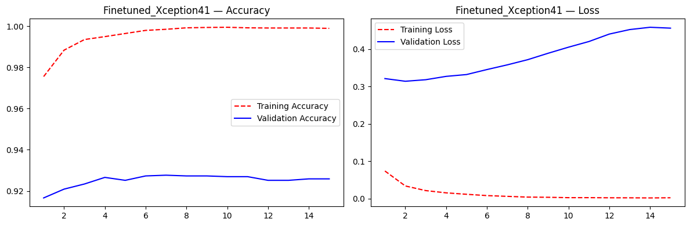
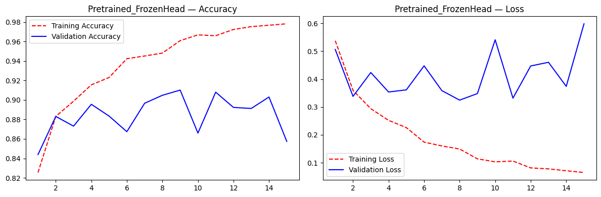
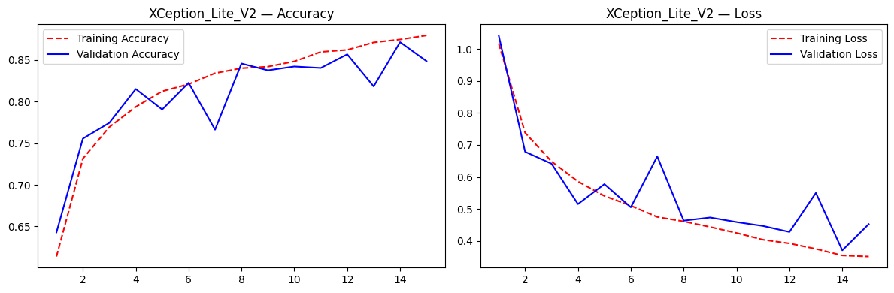
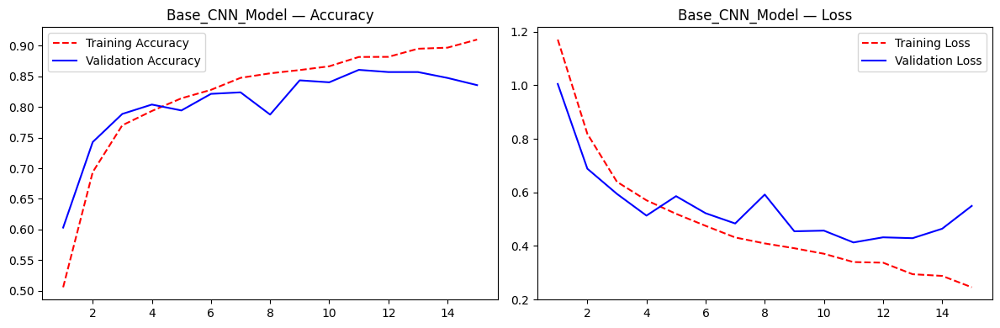
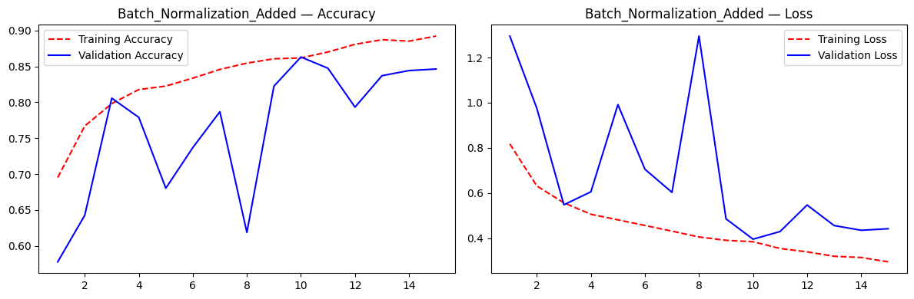
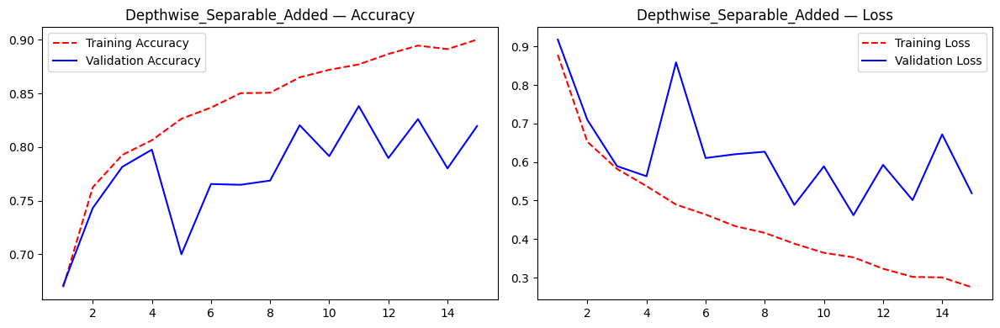
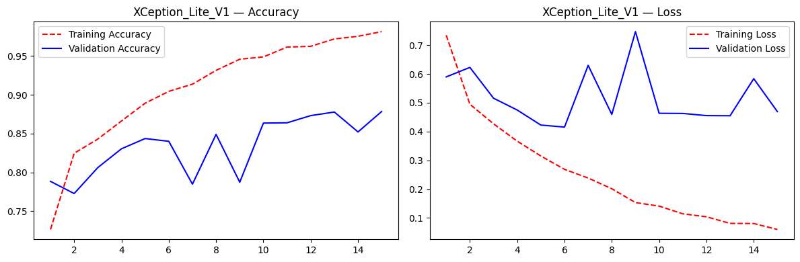
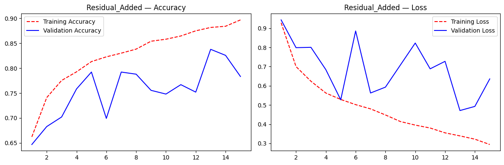
Architecture Diagrams
Generated directly via keras.utils.plot_model() — genuine layer-by-layer graphs, not illustrations. The deeper stages run extremely tall, so each is shown in a scroll frame; open the full diagram in a new tab for the complete layer stack.
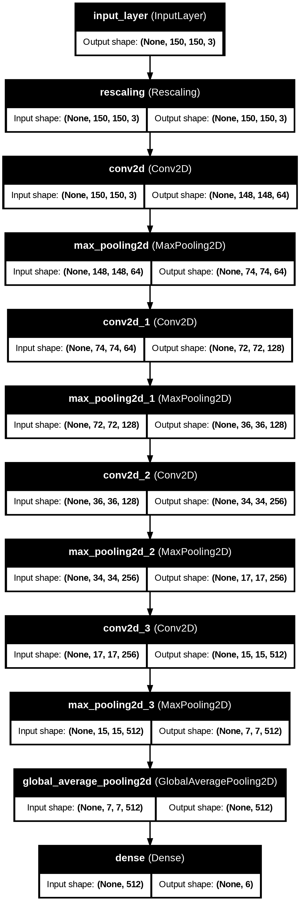

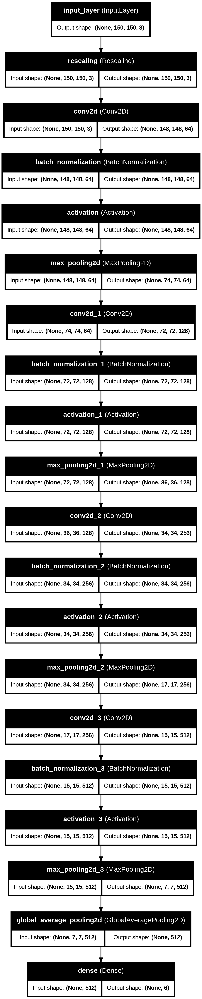
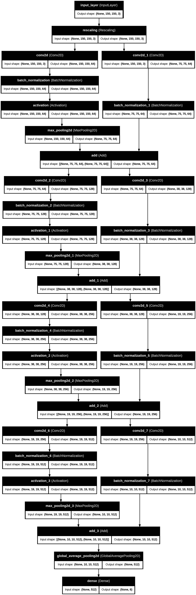
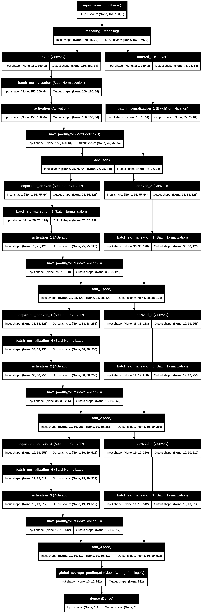


Limitations & Future Work
- Fixed epoch budget and constant learning rate for the from-scratch stages, to keep the comparison controlled — some underperforming architectures (residual connections especially) might close the gap given more epochs, a learning rate schedule, or a larger dataset.
- Resolution differs by stage — the five from-scratch stages train at 150×150; the transfer learning stages use 299×299 (matching the pretrained backbone's native resolution). Deliberate, but it means the transfer learning comparison isn't perfectly comparable with the from-scratch stages.
- Fine-tuning unfroze the entire backbone (aside from BatchNorm layers). Unfreezing only the last few blocks is a common alternative that may reduce overfitting risk further and would be worth comparing.
- A PyTorch reimplementation of the best-performing architecture would be a natural extension, both as a learning exercise and to sanity-check results across frameworks.
- A larger dataset would be another logical next step, to check how these architecture additions hold up with more data to work with.